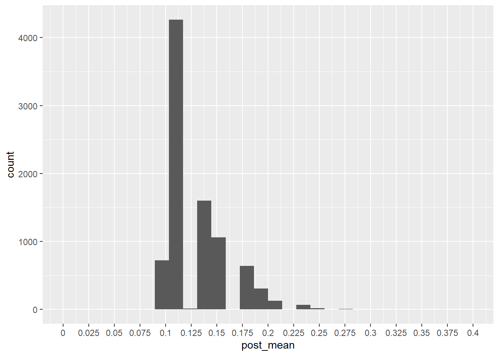

library(tidyverse)
library(gt)7 Bayesian sequential analysis
8 Load library
9 Introduction
In this script, I’m simulating sequential patient monitoring in a single-arm clinical trial. Here are the conditions that we can modify in the simulation:
- Number of simulations
- True event probability and target probability for decision making
- Prior: \(\beta(1,1)\), which is a flat prior
- Total sample size
- Sequential monitoring start at a given sample size
- Sequential monitoring step (every 1 patient is default)
- Posterior after n patients is: $p|data (1+x, 1+n-x) $
At each look, evaluate:
- Futility threshold
- Early efficacy threshold
- Otherwise continue
10 Simulation set up
# Bayesian beta-binomial 1-arm simulation with configurable thresholds
# Includes posterior bias = (posterior mean at stopping - true probability)
simulate_trial <- function(true_p = 0.30,
target_p = 0.30,
maxN = 200,
start_monitor = 50,
monitor_every = 1,
prior_a = 1,
prior_b = 1,
futility_threshold = 0.05, # stop if Pr(p > target_p) < futility_threshold
efficacy_threshold = 0.50, # stop if Pr(p > target_p) >= efficacy_threshold
nsim = 1,
return_both = c("data", "summary")) {
stopifnot(start_monitor >= 1, maxN >= start_monitor,
monitor_every >= 1, nsim >= 1)
return_both <- match.arg(return_both)
# Storage for per-simulation results
results <- data.frame(
sim = integer(nsim),
n = integer(nsim),
x = integer(nsim),
decision = character(nsim),
post_mean = numeric(nsim),
post_lcl = numeric(nsim),
post_ucl = numeric(nsim),
pr_gt_p = numeric(nsim),
posterior_bias = numeric(nsim), # NEW: posterior mean - true_p
stringsAsFactors = FALSE
)
for (s in seq_len(nsim)) {
# Generate Bernoulli outcomes under the true event rate
outcomes <- rbinom(maxN, size = 1, prob = true_p)
decision <- "Max Sample"
n_final <- maxN
x_final <- sum(outcomes)
looks <- seq(from = start_monitor, to = maxN, by = monitor_every)
for (n in looks) {
x <- sum(outcomes[1:n])
# Posterior parameters for Beta(prior_a, prior_b)
post_a <- prior_a + x
post_b <- prior_b + (n - x)
# Analytic posterior probability Pr(p > target_p)
pr_gt <- 1 - pbeta(target_p, shape1 = post_a, shape2 = post_b)
# Futility rule
if (pr_gt < futility_threshold) {
decision <- "Futility"
n_final <- n
x_final <- x
break
}
# Early efficacy rule
if (pr_gt >= efficacy_threshold) {
decision <- "Early Efficacy"
n_final <- n
x_final <- x
break
}
# Else continue
}
# Posterior summaries at stopping point (or maxN)
post_a <- prior_a + x_final
post_b <- prior_b + (n_final - x_final)
post_mean <- post_a / (post_a + post_b)
post_ci <- qbeta(c(0.025, 0.975), shape1 = post_a, shape2 = post_b)
pr_gt_p <- 1 - pbeta(target_p, shape1 = post_a, shape2 = post_b)
posterior_bias <- post_mean - true_p # NEW
# Save results
results$sim[s] <- s
results$n[s] <- n_final
results$x[s] <- x_final
results$decision[s] <- decision
results$post_mean[s] <- post_mean
results$post_lcl[s] <- post_ci[1]
results$post_ucl[s] <- post_ci[2]
results$pr_gt_p[s] <- pr_gt_p
results$posterior_bias[s] <- posterior_bias
}
# Summaries across simulations
decision_table <- table(results$decision)
ess <- mean(results$n)
mean_post_mean <- mean(results$post_mean)
mean_posterior_bias <- mean(results$posterior_bias) # NEW (same as mean_post_mean - true_p)
summary <- list(
settings = list(
true_p = true_p,
target_p = target_p,
maxN = maxN,
start_monitor = start_monitor,
monitor_every = monitor_every,
prior_a = prior_a,
prior_b = prior_b,
futility_threshold = futility_threshold,
efficacy_threshold = efficacy_threshold,
nsim = nsim
),
decisions = decision_table,
expected_sample_size = ess,
mean_post_mean = mean_post_mean,
mean_posterior_bias = mean_posterior_bias
)
if (return_both == "data") {
return(results)
} else if (return_both == "summary") {
return(list(results = results, summary = summary))
}
}11 Running simulation
The target and true probability is 0.1 and I want to do 10,000 simulations.Max sample size is 200.
trialsim1<-simulate_trial(true_p = 0.1,target_p=.1,nsim=10000)
#count decisions
results<-trialsim1|>
dplyr::count(decision)|>
dplyr::mutate(proportion=round(n/sum(n),3))
results|>
gt()| decision | n | proportion |
|---|---|---|
| Early Efficacy | 8258 | 0.826 |
| Futility | 1261 | 0.126 |
| Max Sample | 481 | 0.048 |
#For the ones that go to max sample, did we reach the goal?
goalmax<-trialsim1|>
filter(decision=="Max Sample")|>
dplyr::mutate(goal=if_else(pr_gt_p>=.5,1,0))
mean(goalmax$goal)[1] 0#none of the max sample sizes reached their goal For this simulation, it looks like futility is too stringent. Let’s try reducing futility threshold and increasing sample size
- Max sample size = 500
- Threshold for futility = 0.025
trialsim2<-simulate_trial(true_p = 0.1,target_p=.1,nsim=10000,maxN = 500,futility_threshold = 0.025)
trialsim2|>
dplyr::count(decision)|>
dplyr::mutate(percent=n/sum(n)) decision n percent
1 Early Efficacy 8825 0.8825
2 Futility 883 0.0883
3 Max Sample 292 0.0292#these look like better operating characteristics
#For the ones that go to max sample, did we reach the goal?
goalmax2<-trialsim2|>
filter(decision=="Max Sample")|>
dplyr::mutate(goal=if_else(pr_gt_p>=.5,1,0))
mean(goalmax2$goal)[1] 0#no
#Let's calculate the average sample size for early efficacy
trialsim2|>
filter(decision=="Early Efficacy")|>
summarize(meann=mean(n)) meann
1 71.6834#~71 patients
#Let's see how biased we are for early stopping
trialsim2|>
filter(decision=="Early Efficacy")|>
ggplot(aes(x=post_mean))+geom_histogram()+scale_x_continuous(limits=c(0,.4),breaks=seq(0,.4,.025),labels=seq(0,.4,.025))`stat_bin()` using `bins = 30`. Pick better value with `binwidth`.Warning: Removed 2 rows containing missing values or values outside the scale range
(`geom_bar()`).
#Let's see how many are within acceptable level of bias , say 0.8-.15?
trialsim2|>
filter(decision=="Early Efficacy")|>
dplyr::mutate(accept=if_else(post_mean>=0.8 | post_mean<=0.15,1,0))|>
summarize(`Acceptable bias`=mean(accept),`Not acceptable bias`=1-`Acceptable bias`)|>
round(2) Acceptable bias Not acceptable bias
1 0.75 0.2512 Ways to limit early futility
Lower futility threshold
trialsim3<-simulate_trial(true_p = 0.1,target_p=.1,nsim=10000,maxN = 1000,futility_threshold = 0.01,start_monitor = 100)
#trial results
trialsim3|>
dplyr::count(decision)|>
dplyr::mutate(percent=n/sum(n)) decision n percent
1 Early Efficacy 8934 0.8934
2 Futility 516 0.0516
3 Max Sample 550 0.055013 Concluding remarks
This simulation code lets you simulate different scenarios for one-arm studies. You can change the true probability, target probability, number of simulations, sample sizes, thresholding, and when you want to start monitoring.
14 Session info
sessionInfo()R version 4.5.0 (2025-04-11 ucrt)
Platform: x86_64-w64-mingw32/x64
Running under: Windows 11 x64 (build 26100)
Matrix products: default
LAPACK version 3.12.1
locale:
[1] LC_COLLATE=English_United States.utf8
[2] LC_CTYPE=English_United States.utf8
[3] LC_MONETARY=English_United States.utf8
[4] LC_NUMERIC=C
[5] LC_TIME=English_United States.utf8
time zone: America/New_York
tzcode source: internal
attached base packages:
[1] stats graphics grDevices utils datasets methods base
other attached packages:
[1] gt_1.0.0 lubridate_1.9.4 forcats_1.0.0 stringr_1.5.1
[5] dplyr_1.1.4 purrr_1.0.4 readr_2.1.5 tidyr_1.3.1
[9] tibble_3.2.1 ggplot2_3.5.2 tidyverse_2.0.0
loaded via a namespace (and not attached):
[1] gtable_0.3.6 jsonlite_2.0.0 compiler_4.5.0 tidyselect_1.2.1
[5] xml2_1.3.8 scales_1.3.0 yaml_2.3.10 fastmap_1.2.0
[9] R6_2.6.1 labeling_0.4.3 generics_0.1.3 knitr_1.50
[13] htmlwidgets_1.6.4 munsell_0.5.1 pillar_1.10.2 tzdb_0.5.0
[17] rlang_1.1.6 stringi_1.8.7 xfun_0.52 sass_0.4.10
[21] timechange_0.3.0 cli_3.6.4 withr_3.0.2 magrittr_2.0.3
[25] digest_0.6.37 grid_4.5.0 hms_1.1.3 lifecycle_1.0.4
[29] vctrs_0.6.5 evaluate_1.0.3 glue_1.8.0 farver_2.1.2
[33] colorspace_2.1-1 rmarkdown_2.29 tools_4.5.0 pkgconfig_2.0.3
[37] htmltools_0.5.8.1